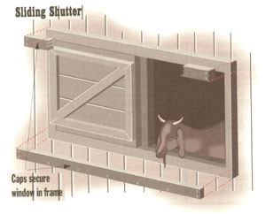

Finish your shed (or barn) with a plank door and sliding windows.
SO SUMMER HAS PASSED (ALONG WITH your sunburn), you've recuperated from building your shed with last issue's plans, and you're rarin' to install those doors and windows. Or perhaps you're looking to replace the ones on your barn or other wooden-frame building. Good news: The plan below can save you from $100 to $600.
The door is the sort you see in photos of pioneer cabins-made of vertical wood planks held together by a boxed Z-brace. The window, a glazed sash or solid shutter, slides in a simple frame. Both are made with straight cuts in stock materials and are surface-mounted; neither requires precision carpentry. Although they can be fastened with nails, self-tapping deck screws installed with a power driver are easier to use and can be removed if necessary.
Doors and windows fit into a rough opening designed in (or sawed through) wall sheathing and the vertical frame members, or studs, that support it. A 15" window will fit between conventional studs placed with centers 16" apart, and a 30" door or window will fill the space left after removing one.
If you're only interested in building a door for people to enter and exit through, your door can be as narrow as 24"; however you're better off with an opening that's 30" to 33" wide, and larger if you're planning to admit a walking tractor or garden cart. Make double doors for an opening wider than 36" and up to 60" across. The door should be high enough so you can get through without knocking your hat off (6' 8" is the most common house door height, but 6' 4" is ample for most people).
The structural support provided by studs removed for the rough is replaced by a header of two sandwiched 2 x 4s or 2 x 6 boards. These are placed on edge above the opening, which is supported by posts of paired 2 x 4s at each side. When cutting, make sure you won't be severing corner posts or studs that support a horizontal carrying beam for the roof or an upper story. If in doubt, call in a pro to advise whether you should install A-frame supports. If wall is sheathed inside and studs are hidden, use a magnetic needle to locate the vertical nail line. If possible, use existing studs to frame the door; cut sheathing so it is the size of one new frame board's width (1 1/2" if using 2 x 4s), from existing stud so door frame will be covered.
When sawing into walls, use cheap throwaway blades (no loss if ruined on a nail). A reciprocating saw is made for rough cutting, but its narrow, easily deflected blade can leave a ragged edge. To guide it, tack (fasten temporarily with a partly sunk nail) a straight board with one edge that's half the width of the saw's foot plate from the cut line. Drill holes in corners of the cutout to admit the blade.
Set a circular saw to cut 1/2" deeper than the sheathing's thickness. Get a secure footing and a firm grip on the saw. To start the cut, tip the saw up on the front edge of the foot plate and, moving forward slowly, lever the blade down and into the wood. Cut slowly, pressing hard against sheathing. Saw carefully and salvage what old wood you can; I've paneled den walls and built picture frames from weathered barn board. Planks come off framing with a judiciously used pry bar, but nailed-on partide board or plywood is hard to remove intact. Don't bother trying to salvage interior sheathing of gypsum wallboard or plaster (although bone-dry wood lath that holds plaster in older buildings makes great kindling for the wood stove).
With sheathing off, mark level cut lines on exposed faces of studs and saw slowly to leave a flat and level cut surface (a handsaw works best). For a door, pry studs off the sleeper (the horizontal board along the floor that supports the studs). If sleeper juts above floor, use the handsaw to cut out the section of sleeper in the doorway.
Being alternately opened and closed, rain soaked and sun baked, and swung on by kids, doors lead a rough life. To last, they must be sturdily built. Nominal 6"wide (actually 5 1/2") boards are best. Narrower boards can slip, canting (tilting) the door, and wider boards can warp.
Don't use that silky smooth, but soft and thin, pine shelving available at buildingsupply centers. A good choice is outsidestored 5/4" x 6" (actually 1" x 5 1/2") decking made of rot-resistant cedar or pressuretreated (PT) lumber-fir or yellow pine treated with CCA preservative. Better yet is 5/4" tongue-and-groove hard pine, in which a 1/2" spline (wood strip) is milled into the edge of one board so it fits into a groove in the next. A 30" door can be made from six 4/5" x 6" x 8' T&G (tongue and groove) planks for under $20. T&G locks along the edges to make a solid, weather-tight door, but it should be painted or soaked with deck preservative against wet rot.
Cut two 2 x 4 jack studs to reach from the floor to the top of the rough opening, narrow edges facing out. Rest them on floor in new frame. Cut two 2 x 4s, one to fit atop the sleeper outside of each jack stud, so they reach to the horizontal frame member above. Fasten jack and outer studs together (flat sides facing each other); use four 12d nails or 2 1/2" screws. Fasten paired studs to sleeper and upper horizontal frame member with holedmetal truss plates on both sides Measure a header: two horizontal 2 x 4s (2 x 6s in any structure but a low shed) laid together, on edge with flat sides facing each other, atop ends of jack studs so they fit snugly between the long, outer studs. Trim lower ends of short studs above rough opening so they are the same width as header boards. Fasten header boards together and then to studs using truss plates.
If you are cutting into a standing wall, incorporate the following directions to those above:
Mark and cut rough opening on sheathing using carpenters' level and framing square to assure that the top is horizontal, the sides are vertical, and the corners are 90°. In Step A, place studs at cut edge of sleeper with their inner edges flush to margin of rough cut in sheathing. For Step E2, trim short wall studs above rough by the width of header. After fastening header boards to studs, fasten them to sheathing every 4".
The door is hinged to the outside of the building. Planks are cut to length and tacked to sheathing. The door is framed in place working through the door opening.
Attach frame boards to planks with fasteners inserted from the inside-out, and attach externally mounted hardware with unremovable one-way screws or lock nuts. This will keep your eight-year-old (or others) from disassembling the door and taking the lawn tractor for a joy ride.
Steps for construction:
A. Select enough vertical door boards so their combined width would fill the rough opening, plus at least 5" from side to side. They should be at least 3" longer than the rough is high.
Trim ends square and so they are 2" longer than rough opening is high. Trim outer long edges of the two side boards equally so the total breadth of door is 4" wider than the rough.
B. Tack a length of 2 x 4 to the floor inside rough opening, front edge even with edge of floor. This will serve as a support cleat to hold bottom of door boards.
C. Set door boards square and centered over outside of rough cutout, bottoms resting against cleat and just a hair above the floor inside. Tack to sheathing at top and sides. Tack bottoms to cleat.
D. Working inside the building, make door frame from 1 x 4 stock.
Cut four boards to frame inside top, bottom, and sides of door. Set frame boards 1/4" in from sills and header, and cut corner joints at 45° for best looks and strength.
E. Fasten border/frame to door planks from the inside with drywall screws long enough so they don't quite pierce outer trim boards. Set screws 1/2" from inner edges, two to a plank at top and bottom, and every 6" down sides.
DOOR ABUSE: Doors take a rough beating, between the rain pouring down on them and kids swinging on them. You're best bet is to build with a sturdy, 6"-thick wood.
F. Fashion a diagonal brace from a 1 x 4. Angle down from the top of the latch side of the door to the bottom of the hinge side. Cut snug, with corners at a 90° angle so ends butt equally to both top and side frame boards. Fasten from inside using two screws to a plank.
A. Cut 4"- to 6"-wide boards the same thickness as the door to frame outer sides and top of door opening. Top board should extend across top of side boards.
B. Fasten trim to sheathing, inner edges 1/4" from edges of door. A double row of screws set every 4" down trim (through sheathing and into studs) is especially important on the hinge side.
C. Hang door to trim using three flat hinges, one set at mid-door and the others 8" to 10" from top and bottom.
D. Fasten latch to door.
E. Fasten latch plate to adjoining trim so latch fastens securely.
Finally, remove tacks holding door to sheathing and cleat in door sill. Open door and remove cleat. Trim below door if building lacks skirt boards.
Selecting hardware and fasteners:
Don't cheapen the looks of your handcrafted door with shiny metal "economy price" latches and hinges sold in shrink packs. The little screws that come with them are worthless, and the thinly plated steel will show rust the second year. Heavyduty, hot-dip galvanized hinges will hold up but will make your door look like a field gate. I'd suggest buying black-iron hardware costing just a few dollars more.
(Install double doors in any rough opening much wider than 36".)
A. Measure, cut, and assemble as if making a pair of opposed single doors.
1. If using T&G, trim 1/2" off the inside edges of inner boards and off the outer edge of outside boards on each door.
B. Leave a 1/4" seam between the two middle boards (seam located at center of cutout).
C. Frame doors individually and fasten Z-braces angling down from inner latch to outside hinge sides in a pyramid configuration.
D. Outside, fasten a 1 x 4 closing strip along inner edge of right-hand door so it juts out 1 1/2" to overlap and close the lefthand door.
E. Fasten trim boards around doors, and hinge both doors.
F. Fix latch to closing strip on righthand door and latch plate to a block of wood on left door.
G. Put a D-shaped handle on the lefthand door.
Selecting hardware and fasteners:
Butterfly-type flat hinges will do for lightweight doors. Use long strap or T-hinges if door takes much effort to lift. With heavy doors, fasten 2 x 4 stiffeners between studs inside sheathing behind hinges; fasten hinges with screws long enough to bite into the 2 x 4s.
Secure double doors by affixing large, gate-size throw bolts (vertically) to top and bottom of door without the closing strip. Drill holes in header and floor to accept extended bolt. Buy a latch that accepts a padlock.
Windows too can be installed into an opening cut into a standing wall. A wood/glass window sash, a sheet of clear plastic glazing, or a metal-framed glass pane from an old storm door can be fixed, hinged on any side, or put in a pair of channels to slide back and forth. Make them any size you like, but 24" square is good for a small shed. Put one or two windows in the wall if you have an endlocated door, one to each side of a central door. Cut the rough opening 2" smaller in both dimensions than the window frame.
Frame a window opening that displaces wall studs with doubled studs at the side and 2 x 4 or 2 x 6 header at top (as for door). Trim short (cripple) studs below rough by 1 1/2" so you can install a single 2 x 4 atop them-2 x 4 laid flat and cut to fit snug between jack studs. All around, align inner edges of frame even with edges of cutout. Nail frame joints; from the outside, fasten frame to sheathing every 4".
Your tiller or lawn chairs don't need light to see by, and glazed windows aren't essential in a barn or shed. A shutter, cheaper and less fragile, will serve as well.
A. Cut shutter to be longer and wider by 2" than rough opening. Make it of plywood or of horizontally butted T&G boards; trim away milled edges at top and bottom trimmed. Half-inch, outside-glued plywood alone will make a stiff shutter, but fasten two squares of 3/8" or 1/4" ply together.
B. Frame it to join several boards or to keep plywood from warping.
1. On a flat worktable, arrange boards horizontally.
2. Fasten with a boxed Z-frame of 1" x 3" boards. This is similar to a door, but locate top and bottom frame boards a good 1" from the upper and lower edges, leaving a lip to slide in the channels.
Build a pair of channels for the shutter to slide in. For greatest security, fasten with screws from inside.
A. Center window or shutter, frame facing out, over rough opening. Tack it on level, setting tack nails through middle of sides. If tacking a glazed, wood-framed sash, drill pilot holes at outer edges of frame, using small nails.
B. Make slides. From a 2 x 4 or by layering scrap plywood (better), fashion two wood strips-in length, 2" more than twice the window's width, 2" wide, and thicker than window frame by 1/4".
1. Fasten one strip to sheathing along bottom of tacked-on shutter, one end even with edge of window, longer end extending out along slide path. Hold a straightedge and carpenters' level under to assure that strip remains straight, and level all. 2. Fasten the other strip 1/4" above window, ends even with lower strip.
C. Put vertical stop blocks at each end of the strips.
D. Cut two keeper boards of 1 "-thick lumber (or 1/2" plywood) as long as strips, but 1" wider.
1. Fasten them atop strips so they hold window in.
E. Remove tack nails; window will slide freely in the frame.
F. Fasten a thin strip of aluminum flashing (like a roof over the top of an upper channel). This will keep water from swelling the wood so shutter binds.
To secure a sliding window or shutter, drill a slightly down-sloping hole through sheathing, through lower edge of window sash or shutter, and into the keeper board. Close window, put a nail into hole, and window will stay closed.
|
 |
|
|